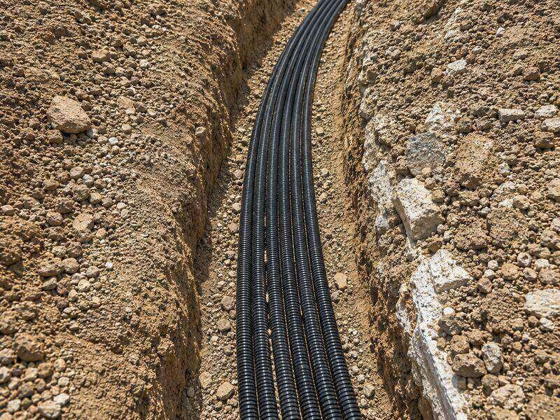
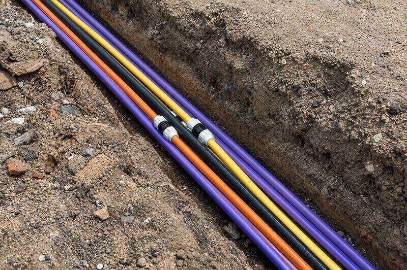
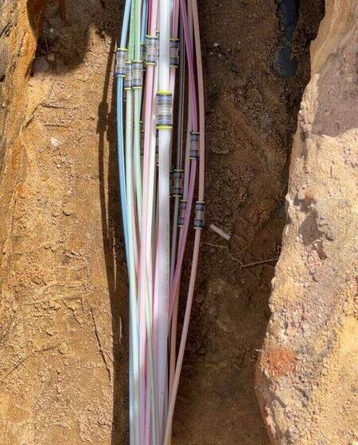
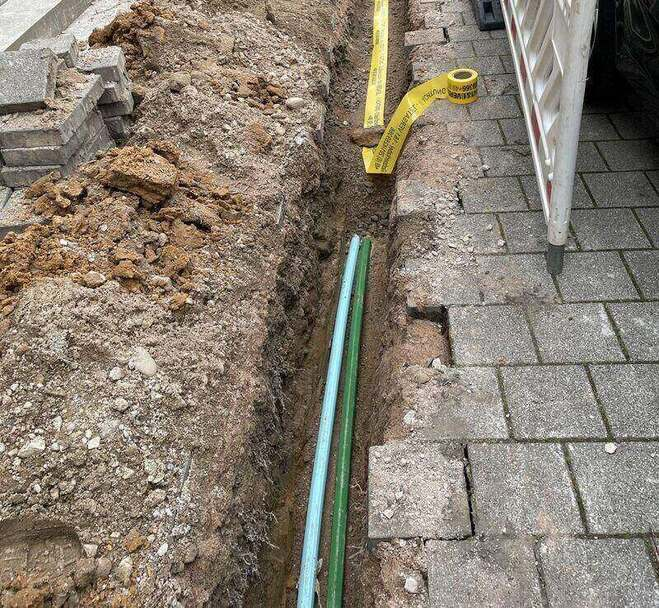
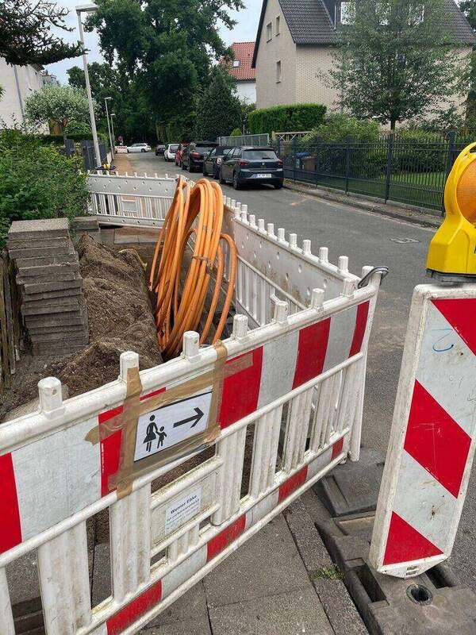
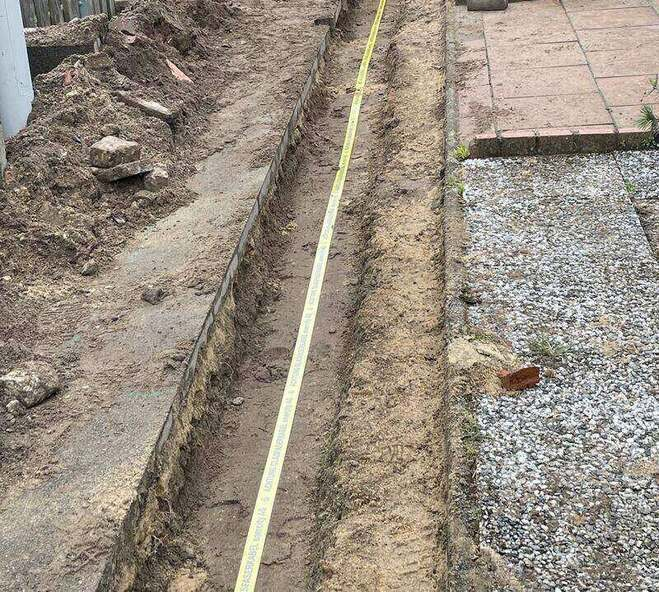
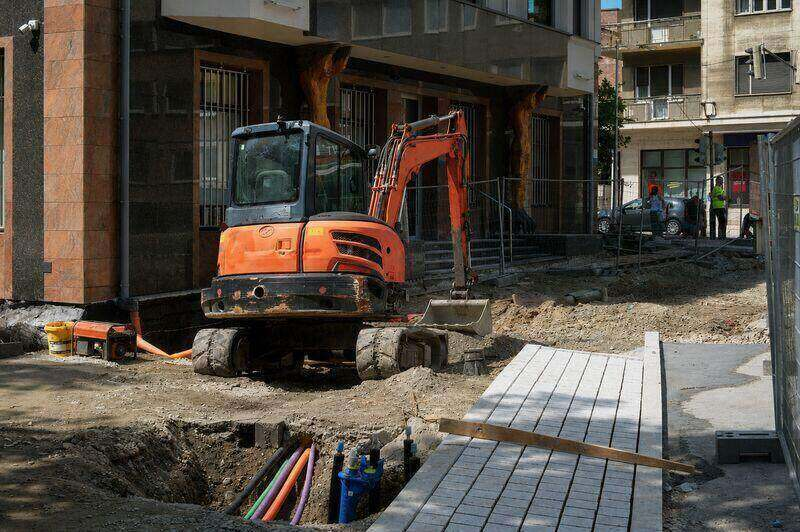

L.01
Erdkabelverlegung
Kabelgraben in offener Bauweise, Sandbett, Trassenband, Einzug und lagegerechte Verlegung nach Plan.

Wir arbeiten als Nachunternehmen. Sie beauftragen genau die Abschnitte, die in Ihrem Leistungsverzeichnis offen sind — nicht mehr und nicht weniger. Abrechnung nach Einheitspreisen.
Kabelgraben in offener Bauweise, Sandbett, Trassenband, Einzug und lagegerechte Verlegung nach Plan.
Schutz- und Leerrohre einzeln oder im Bündel, Bögen und Übergänge, Kalibrierung und Endverschluss.
Grabungsarbeiten für FTTH und FTTB: Trassen im Gehweg, Mindertiefe, Hausanschlussgräben und Hauseinführungen.
Aushub, Start- und Zielgruben, Verbau nach Vorgabe, Sicherung und geordnete Lagerung des Materials.
Einrichtung und Räumung, Absperrung, Materialtransporte bis 3,5 t sowie Geräte- und Zufahrtskoordination.
Lagenweises Verfüllen, Verdichten nach Vorgabe und Wiederherstellung von Gehweg, Pflaster und Grünfläche.
Gehweg und Fahrbahn bleiben während der Ausführung begehbar und befahrbar. Vor der Abnahme folgt die Endreinigung.
Nicht erlaubnispflichtige Montage- und Demontagearbeiten als abgegrenzter Leistungsteil — projektbezogen, nach Leistungsverzeichnis.

Wir führen den Kabelgraben in offener Bauweise aus, legen das Sandbett, ziehen das Kabel ein und verlegen es lagegerecht nach Plan. Trassenband und Abdeckung gehören dazu.
Aushub in der im Leistungsverzeichnis vorgegebenen Breite und Tiefe, mit laufender Tiefenkontrolle.
Liefern und Einbauen des Bettungsmaterials in der Leitungszone nach Vorgabe.
Einzug von Energie- und Steuerkabeln, Zugkraft und Biegeradien nach Herstellerangabe.
Warnband und mechanischer Schutz über der Leitungszone.
Elektroanschluss, Muffenmontage und Prüfung — das bleibt beim Fachbetrieb.
Schutz- und Leerrohre verlegen wir einzeln oder im Bündel, mit sauberen Bögen und Übergängen. Jedes Rohr wird kalibriert und verschlossen übergeben.
Verlegung nach Belegungsplan, farbcodiert und lagerichtig.
Biegeradien nach Vorgabe, Übergänge in Gruben und Schächte.
Durchgangsprüfung mit Kalibermandrel nach dem Verfüllen.
Verschluss und Kennzeichnung der Rohrenden gegen Wassereintritt.
Beschriftung je Abschnitt für die späteren Montagearbeiten.

Für den Glasfaserausbau übernehmen wir die Grabungsarbeiten vollständig: Trassen im Gehweg, Mindertiefe, Hausanschlussgräben und Hauseinführungen.
Längstrassen in Gehweg, Grünstreifen und Nebenanlagen.
Schmale Gräben nach Vorgabe des Netzbetreibers, Verfüllung nach Regelwerk.
Abzweig von der Längstrasse bis zur Grundstücksgrenze und zum Gebäude.
Kernbohrung und abgedichtete Einführung, soweit im Leistungsverzeichnis enthalten.
Spleißen, Messen und Aktivierung der Faser.

Aushub, Start- und Zielgruben für Bohrverfahren, Verbau nach Vorgabe, Sicherung und geordnete Lagerung des Aushubmaterials.
Maschinell und in Handschachtung, wo Bestandsleitungen es verlangen.
Für HDD und Erdrakete, in der vom Bohrunternehmen vorgegebenen Geometrie.
Grabenverbau, Abdeckungen und Absturzsicherung nach Vorgabe.
Getrennte Lagerung von Oberboden, Aushub und Wiedereinbaumaterial.
Freilegen von Bestandsleitungen im Schutzbereich.

Wir richten die Baustelle ein, sichern sie, transportieren Material bis 3,5 t und koordinieren Geräte und Zufahrten.
Aufbau und Rückbau der Baustelleneinrichtung inklusive Lagerflächen.
Absperrmaterial, Beschilderung und Fußgängerführung nach Verkehrszeichenplan.
Material- und Gerätetransporte im eigenen Fahrzeug.
Anlieferung, Abholung und Einsatzplanung von Mietgeräten.
Abstimmung mit Anwohnern, Gewerbe und Rettungswegen.

Lagenweises Verfüllen und Verdichten nach Vorgabe, danach Wiederherstellung der Oberfläche — Gehweg, Pflaster, Asphaltkante oder Grünfläche.
Einbau in Lagen nach Vorgabe des Regelwerks bzw. des Netzbetreibers.
Verdichtung mit geeignetem Gerät, auf Wunsch mit Verdichtungsnachweis.
Wiederaufbau von Gehwegplatten, Verbundpflaster und Bordsteinen.
Herstellen der Anschlusskante und Vorbereitung für die Deckschicht.
Oberbodenauftrag und Ansaat, soweit beauftragt.

Laufende Reinigung im Baufeld während der Ausführung und Endreinigung vor der Abnahme.
Fahrbahn und Gehweg werden arbeitstäglich befahrbar und begehbar gehalten.
Vollständige Reinigung des Baufeldes vor der Übergabe.
Geordnete Entsorgung nach Abstimmung und Nachweis.
Die Fläche ist nach der Reinigung unmittelbar nutzbar.

Nicht erlaubnispflichtige Montage- und Demontagearbeiten führen wir als abgegrenzten Leistungsteil aus — projektbezogen und nach Leistungsverzeichnis.
Rückbau nicht tragender Innenbauteile nach Vorgabe.
Demontage von Einbauten, Anlagenteilen und Nebenanlagen.
Rückbau von Nebenanlagen im Außenbereich.
Getrennte Erfassung der Materialien für die Entsorgung.
Statisch relevanter Rückbau und Schadstoffsanierung.
Eine klare Leistungsgrenze ist kein Mangel, sondern Projektsicherheit. Diese Arbeiten übernehmen wir nicht:
Schweiß- und Montagearbeiten am medienführenden Rohr bleiben beim Fachbetrieb.
Anschluss, Muffenmontage und elektrische Prüfung führt der konzessionierte Betrieb aus.
Glasfaser-Spleißung, Messung und Aktivierung gehören nicht zu unserem Leistungsumfang.
Eingriffe in tragende Bauteile setzen Statik und Fachplanung voraus.
Asbest und vergleichbare Schadstoffe erfordern zugelassene Fachbetriebe.
Die Bohrleistung selbst vergeben wir nicht — wir stellen Start- und Zielgruben und die Oberfläche.
Wir prüfen, welche Positionen wir abdecken, und antworten mit Einheitspreisen und einem realistischen Terminvorschlag. Ohne Paket, ohne Mindestlaufzeit.